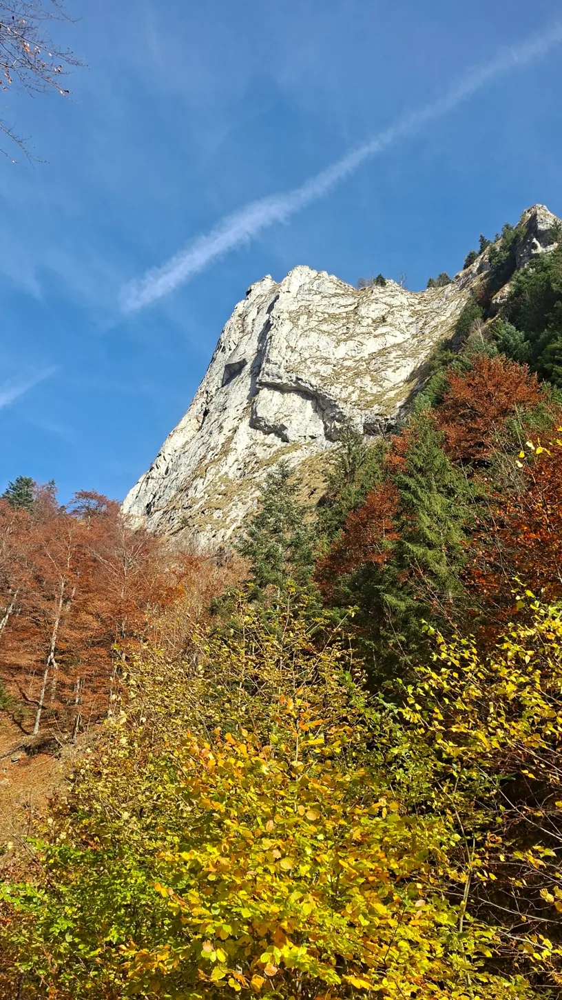
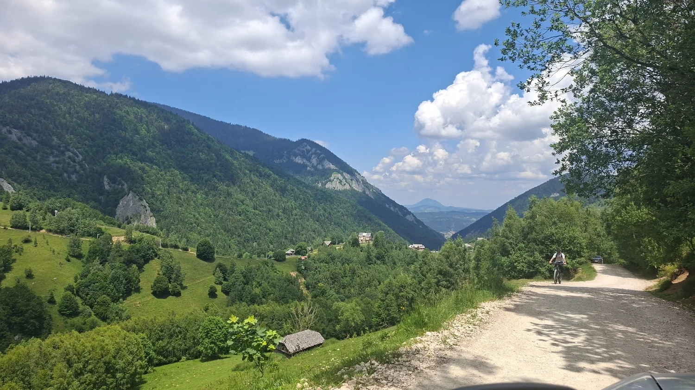
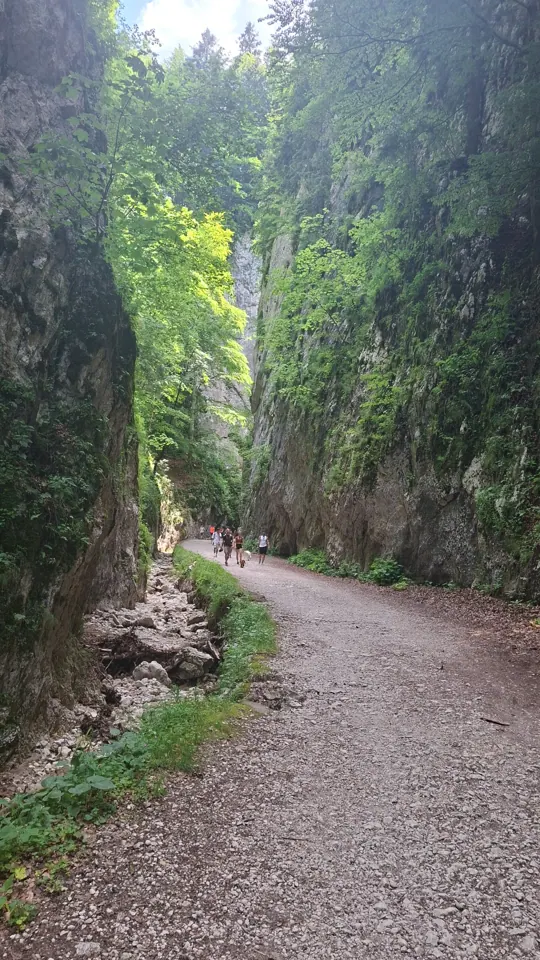
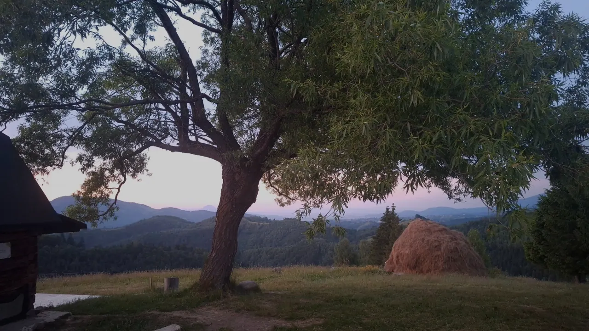
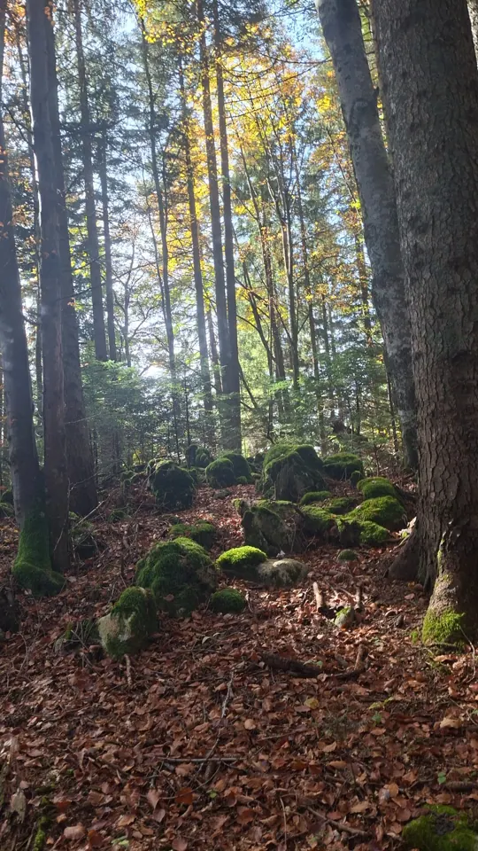

Photo gallery
A few moments from the road. Select a photograph to see it up close.
 Hidden Transylvania
Hidden Transylvania Village landscapes
Village landscapes Scenic drives
Scenic drives On two wheels
On two wheels Evening in the hills
Evening in the hills
On the trail Bran Castle
Bran Castle Zărnești Gorge
Zărnești Gorge Horse riding
Horse riding E-bike adventures
E-bike adventures At the table
At the table
Mountain roads From my camera
From my camera From my camera
From my camera From my camera
From my camera From my camera
From my camera From my camera
From my camera From my camera
From my camera From my camera
From my camera From my camera
From my camera From my camera
From my camera From my camera
From my camera
From my camera
From my camera
From my camera From my camera
From my camera